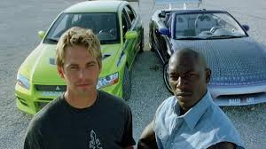
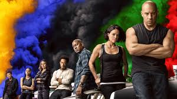

Velozes e Furiosos 1 é um filme de 2001 que conta a história de Dominic Toretto (Vin Diesel), líder de uma gangue de corridas de rua em Los Angeles, que está sendo investigado pela polícia por roubo de equipamentos eletrônicos1. O agente Brian O'Conner (Paul Walker) se infiltra no bando de Toretto para conseguir provas contra ele, mas acaba descobrindo sua paixão por velocidade

Mais Velozes e Mais Furiosos (2003)
Após deixar a polícia, Brian O'Conner (Paul Walker) é forçado a participar de uma nova missão: se infiltrar no crime organizado de Miami de forma a investigar sobre o transporte de dinheiro sujo para Carter Verone (Cole Hauser), o chefe do tráfico local.
Director: John Singleton

Velozes e Furiosos: Desafio em Tóquio (2006)
A história de Velozes e Furiosos é baseada em gangues que transformam carros comuns em automóveis de corrida e fazem competições para estabelecer território e ganhar poder. O líder de uma dessas gangues é Dominic Toretto (Vin Diesel), que monta os carros mais potentes e ganha dinheiro com as corridas.
Velozes e Furiosos 4 (2009)
O sétimo filme da franquia é o maior sucesso de bilheteria de toda a saga. O longa de 2015 gerou uma bilheteria de US$ 1,515 bilhão.
De acordo com informações do The Wrap, o orçamento de Velozes & Furiosos 10 está na casa dos US$ 340 milhões - o filme mais caro da franquia e um dos mais caros de todos os tempos.